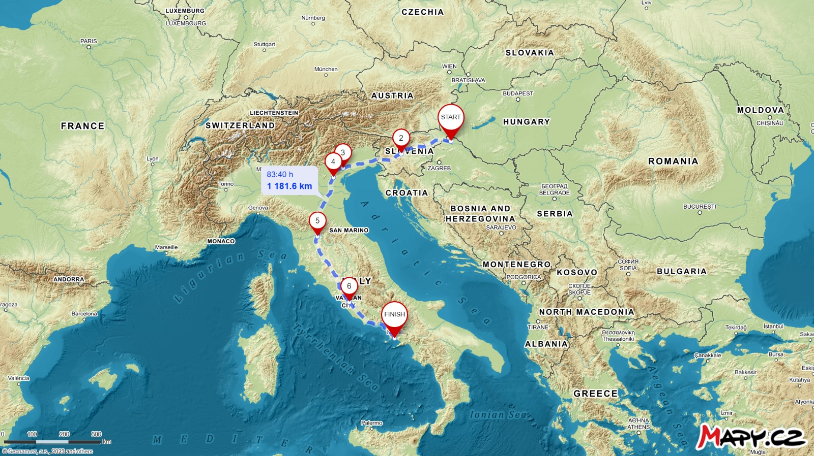

Giro d' Italia
Dan nakon uspješno položenog ispita, 20.7.2021. rano ujutro krenuli smo putem Napulja. Uzbuđeni i malčice prestrašeni (Nina) zbog toga što nam je ovo bilo prvo veće zajedničko putovanje hrabro smo krenuli u napad. U 19 dana odvozili smo otprilike 1500km kroz Sloveniju i Italiju. Putem smo posjetili Padovu, Bolonju, Rim i Napulj gdje smo se nauživali talijanske kuhinje i kulture. Blog svakog dana možete pročitati pritiskom na određeni datum na kalendaru.